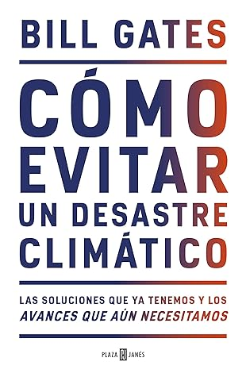

Cómo evitar un desastre climático: Las soluciones que ya tenemos y los avances que aún necesitamos
Reseña por Jorge I. Zuluaga

Ver reseña en GoodReads (necesita cuenta)
Personalmente, me consideraba "enemigo" de Bill Gates (como puede serlo cualquier "idealista informático", cualquier académico anónimo): odiaba su sistema operativo, que iba contra la filosofía del software libre; odiaba la manera como había conseguido su fortuna (o como creía yo que lo había hecho), "robando" ideas a otros; odiaba el hecho de que cada persona del planeta, de una manera u otra, le pagaba un poco de dinero para ser cada vez más rico.
Hoy escribo esta reseña en un portátil con sistema operativo Windows. ¡Sí, sucumbí a "sus encantos"! O simplemente me hice viejo. Aún tengo instalado Linux en un subsistema en mi laptop y sigo usando la línea de comandos y software libre para mi trabajo. Pero no resistí la necesidad de tener un sistema operativo predecible y en el que todo sea fácil de instalar. Aún peor, soy de los millones de "incautos" que paga mensualmente una cuota por usar MS Office porque todo el mundo a mi alrededor lo usa y me cansé de llevar la contraria. Les he fallado a mis amigos idealistas por una vida más cómoda y menos contradictoria.
Pero lo más increíble (al menos para mi yo anterior): ahora admiro a Bill Gates. Estoy convencido de que de verdad se está convirtiendo (¡o ya lo es!) en una de esas figuras que serán indispensables para enfrentar los desafíos de un mundo cada vez más incierto. Lo veo incluso ganando un premio Nobel de Paz y siendo recordado por algo más que un monopolio informático y una pantalla con paisajes.
Y no es que haya pasado del odio a la admiración bobalicona simplemente por haber envejecido y haberme vuelto más conservador en lo informático.
Mi imagen de Gates empezó a cambiar después de ver un documental sobre su vida en Netflix, "Inside Bill's Brain", que recomiendo sin miramientos.
No esperaba mucho del documental, que empecé viendo de mala gana.
Creía que vería una recopilación de sus "grandes logros" (los que yo había criticado toda mi vida) y de sus actuales proyectos y labor filantrópica.
Lo que no esperaba era encontrarme con que los proyectos en los que trabaja Gates con su siempre infatigable compañera, Melinda (a la que también debemos gran reconocimiento y admiración; ahora la entiendo), serían tan increíbles, tan visionarios. No tenía ni idea de que muchos de ellos estaban dirigidos a mejorar la vida de personas que nada tienen que ver con aquellos que podemos pagarnos la licencia de Office. Desde la erradicación de la malaria, pasando por la invención de sanitarios que no requieren agua para lugares en los que es difícil conseguirla, hasta el diseño y construcción de reactores nucleares pequeños y seguros que pueden resolver algunos de nuestros problemas energéticos presentes y futuros.
A todo eso se sumó que, a través del documental, descubrí que Gates había sido siempre un lector voraz; que tenía una biblioteca asombrosa y que, a pesar de su trabajo, sigue leyendo más de lo que seguramente lo hace la inmensa mayoría de los multimillonarios o de los líderes mundiales con los que se codea. ¿Cómo podía no saber nada de eso sobre mi "enemigo"?
Este no era el Gates que yo imaginaba.
Por eso, cuando descubrí que había escrito un libro sobre el cambio climático, no dudé en conseguirlo. Si alguien tan práctico como Gates, que no tiene nada que ver con la ciencia del clima o el medio ambiente, se lanzaba al ruedo con un libro sobre este tema, era porque seguramente algo importante e inspirador tendría para contarnos. También me causó buena espina el hecho de que fuera un gran lector. Alguien así no podía escribir una trivialidad sobre un tema tan importante.
Y no me equivoqué.
La primera sorpresa que me llevé fue la sencillez, la franqueza y el pragmatismo con el que está escrito el libro. ¡Genial! Solo así un mensaje tan importante puede llegar al mayor número de personas.
Sería también ingenuo pensar que esto es obra solo de Gates. A este nivel es bien sabido por casi todos que los libros no los escribe solamente el autor que firma la portada. Esto lo confirma Gates en los agradecimientos, donde por primera vez encontré un reconocimiento explícito al trabajo del escritor en la sombra. ¡Admirable!
Aun así, a lo largo de todo el texto (tal vez con la excepción de los últimos tres capítulos), se siente ese tono directo y concreto que espera uno de un personaje capaz de levantar emporios empresariales de escala planetaria o de conseguir, con la misma "facilidad", que se lleven a cabo campañas de vacunación masiva en países africanos.
El libro no tiene un lenguaje literario elaborado o descripciones de experiencias personales contadas con ese indistinguible estilo literario que caracteriza a muchos autores de divulgación norteamericanos ("habla de tus experiencias", me imagino a los editores gringos recomendando a sus escritores). Tampoco te encontrarás sesudas, aunque entretenidas, explicaciones científicas.
Nada de eso. El libro va al grano; se siente más como una conversación informal, algo que te contaría Gates si tuvieras la oportunidad de sentarte con él en la sala de su casa.
La segunda sorpresa que me llevé fue que Gates logró, en escasas 300 páginas, convencerme personalmente de que una solución al problema del calentamiento global antropogénico es viable. No es que yo sea un hueso duro de roer; al contrario, soy un lector más bien emocional y crédulo, pero también soy científico y me precio de saber de números y algo de sistemas complejos (como el clima o la sociedad), o más bien de entender que la complejidad de esos sistemas hace difícil encontrar soluciones sencillas al problema.
Como creo que sabemos la mayoría (excepto tal vez los negacionistas o los que simplemente no están pensando en el problema por ignorancia o porque no quieren preocuparse), el calentamiento global es el reto más complejo que ha enfrentado la humanidad en su historia. No ha habido conflicto bélico, epidemia o desastre natural de la escala y la complejidad que estamos enfrentando hoy. Por la misma razón, cualquiera que se precie de estar informado difícilmente creería que exista una solución a la vista y que pueda implementarse en un par de décadas.
Pero cuando lees a uno de los más inteligentes, influyentes y pragmáticos empresarios de la Tierra demostrar con ideas novedosas, con mecanismos concretos y cifras bien fundamentadas que una solución es posible, es inevitable no contagiarse del optimismo.
Es cierto también que, después de completar el libro, especialmente después de leer los capítulos más pesados del final (10, 11 y 12), también se da uno cuenta de que conseguir la meta que plantea y defiende Gates en el libro —a saber, reducir a cero las emisiones netas de carbono (dióxido de carbono y sus equivalentes) para antes de 2050— será muy difícil, especialmente por razones políticas. Sin embargo, el hecho de que uno de los inventores del computador personal demuestre que tenemos la capacidad para desarrollar y poner a circular las tecnologías necesarias para lograrlo te hace sentir que, sin dejar de ser muy difícil, no todo está perdido.
Yo suponía que era una persona relativamente versada en temas de energía, pero después de leer el libro de Gates me doy cuenta de los complejos vericuetos, especialmente económicos y sociales, que rodean el problema.
Me sorprendió reconocer, por ejemplo y como lo demuestra Gates, que abandonar completamente el uso de combustibles basados en carbono será casi imposible en el mediano plazo. Pero también que eso no implica consumirlos asegurando una emisión neta nula (liberación - absorción = 0).
Entendí, por ejemplo, que no vamos a tener aviones, camiones o trenes eléctricos en el mediano y tal vez tampoco en el lejano plazo; pero también que podemos producir combustibles para esos vitales medios de transporte que no produzcan una emisión neta. Además, esos medios de transporte que a veces satanizamos exageradamente tampoco representan el grueso de las emisiones, que están realmente concentradas en el sector de los vehículos personales, en el que la electrificación es posiblemente el camino más seguro para la descarbonización.
En 2020 compré un carro eléctrico, con todo y el sacrificio económico que eso significó para mi familia. No somos ricos, hemos tenido solo dos carros en la vida y ninguno de ellos ha sido de lujo. El eléctrico tampoco lo es, pero cuesta como si lo fuera. Después de leer el libro de Gates entendí que hice bien. Pasarnos a los vehículos eléctricos personales es una de las cosas que los ciudadanos de a pie podemos hacer para contribuir a la descarbonización progresiva del planeta. Pero también entendí (no es que no lo supiera, es que el libro de Gates es muy ilustrativo) que mientras la electricidad con la que cargo mi vehículo siga viniendo de centrales hidroeléctricas (las que más abundan en Colombia), productoras masivas de metano, lo único que estaré haciendo será desplazar mi producción de CO2, con el transporte personal, a otro lugar de la atmósfera y de allí me alcanzará de todos modos.
Me encantó el mensaje central del libro, que contradice de alguna manera todo lo que escuchamos por ahí: no podemos apresurarnos a descarbonizar la economía antes de 2030.
Reducir nuestras emisiones a cualquier costo, en poco tiempo, podría agravar el problema. La economía (o el capitalismo) está en nuestra contra, pero también esa misma economía puede ayudarnos a resolver el problema. La solución al cambio climático puede ser una fuente inagotable de negocios y riqueza.
Debemos proceder de forma inteligente, plantea Gates como parte de sus propuestas, electrificando primero todo lo que podamos (y tratando de hacerlo con fuentes de electricidad de bajas emisiones): transporte, aires acondicionados, fábricas, etc.; hay que fortalecer las redes eléctricas para llevar a todos los lugares del planeta la electricidad que se produce por todos los medios que podamos. Solo con ese "primer paso" se podrá, en el mediano plazo (2050), conseguir el resultado deseado: vivir en un mundo con cero emisiones netas, incluso con emisiones negativas.
Otra cosa poco obvia que encontré en el libro: dejar de consumir y evitar que los países en desarrollo lo hagan, o que mucha más gente llegue a los niveles de vida que tienen las personas de los países desarrollados, tampoco es una solución viable.
En realidad es muy injusto y contrario al objetivo de que la mayor cantidad de personas posibles vivan con el mayor bienestar que puedan obtener de los adelantos tecnológicos. Gates insiste en que en realidad podemos continuar por la senda del desarrollo para todos si encontramos los medios para conseguirlo de forma limpia; no como lo hicieron los países que hoy gozan de ese desarrollo y que nos tienen justamente en este problema. Hay que llevar electricidad a los 800-1.000 millones de personas que carecen de ella en el planeta, es inmoral no hacerlo, pero debe ser una electricidad nueva, producida sin los costos ambientales de la electricidad de la que hemos gozado el resto.
Como es obvio, me encantó encontrarme en las páginas del libro confirmación a mis ideas sobre el papel que jugará la energía nuclear en la solución del problema. En especial la satanizada fisión nuclear, que conocemos bastante bien. Gates no solo es pronuclear, como creo personalmente que debe serlo cualquier persona sensata y mínimamente informada; es además dueño de una compañía nueva que diseña reactores nucleares de cuarta generación para poner esta tecnología al alcance de países en desarrollo. Qué más se le podía pedir a este tipo.
En síntesis, les confieso que me siento un poco mejor después de leer el libro de Gates y quisiera que a otros les pasara lo mismo.
No desconozco que las soluciones que esboza serán difíciles de conseguir; incluso puede que nunca logren implementarse por la complejidad política de un mundo cada vez más poblado y posiblemente dividido ideológicamente. Pero tan solo saber que existe una solución viable es mejor que la desazón constante del desastre inminente sin solución.
Espero que muchos tomadores de decisiones lean este libro (a ellos creo que está dirigido principalmente el esfuerzo de Gates al escribirlo). Lo que soy yo, creo que se convertirá en uno de esos textos históricos que se citarán en décadas futuras como un ejemplo de un verdadero ejercicio práctico para encontrar soluciones al problema más difícil que ha enfrentado nuestra especie.
¡Me quito el sombrero ante Gates! Espero leer muchas más cosas suyas (y también cancelar pronto, gracias a Google Drive, mi suscripción a Office).